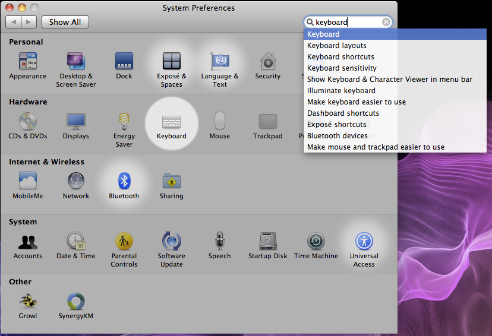
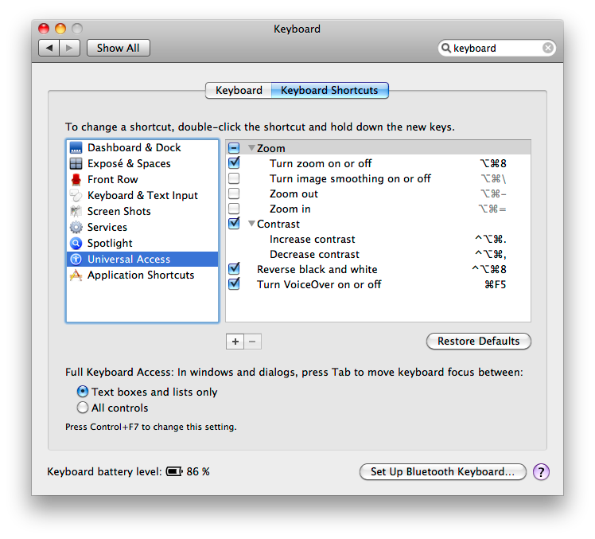
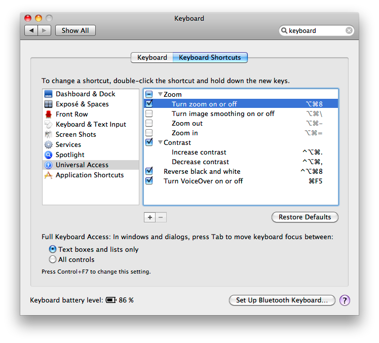

Brokeback Mountain functionality on OS X.
A co-worker of mine recently mentioned that he had a problem where he all-too-often accidentally quit his applications by hitting ⌘-q (command-q). Since he has been having problems with Thunderbird that I can’t fix, I thought I might do a little digging and see if I could come up with some way of helping him. And so here’s what I found:
In the System Preferences application, there’s a “Keyboard” section.

One of the things you can choose in that section is “Keyboard Shortcuts”.

Pick a relatively innocuous function, like turning Zoom on and off.
(Note: DO NOT choose Front Row for this!)

And assign that function to ⌘-q.

Now, whenever you hit ⌘-q, it will do whatever you selected, instead of quitting the application. Ta-da!
Comments
Comments powered by Disqus